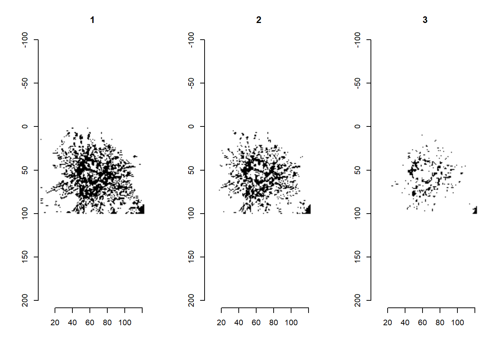

Chapter 6 CV
6.1 connecting and using an external database
In this chapter I am going to show I used a external database (DBeaver) to store and process files. For this chapter we use the gapminder data of the dslabs package and the data from google about flu and dengue searches per country.
firstly we load the flu dengue data from the repo and the gapminder data into data frames. the searches data contains a header which is needed to be skip.
library(dslabs)
Flu_data <- read.csv("~/Rschool/Berrit-Github.github.io/data/flu_data.csv", skip = 11)
Flu_data <- as.data.frame(Flu_data)
dengue_data <- read.csv("~/Rschool/Berrit-Github.github.io/data/dengue_data.csv", skip = 11)
dengue_data <- as.data.frame(dengue_data)
gapminder <- as.data.frame(gapminder) Next we use R to tidy up the data a bit and make it compatible with each other. We do not yet make it tidy data this will come later.
library(tidyverse)
Flu_data_tidy <- Flu_data %>% pivot_longer(cols = -c(Date) , names_to = "country" , values_to = "Weekly_searches")
dengue_data_tidy <- dengue_data %>% pivot_longer(cols = -c(Date) , names_to = "country" , values_to = "Weekly_searches")
gapminder <- gapminder %>% pivot_longer(cols = -c(country , year, continent , region) , names_to = "variable" , values_to = "values")we change the data from the flu and dengue data so it works with the gapminder data we do this by combining the data of the “Date” into “years”
library(dplyr)
Flu_data_tidy$Date <- Flu_data_tidy$Date %>% str_sub(1 ,4)
dengue_data_tidy$Date <- dengue_data_tidy$Date %>% str_sub(1 ,4)
Flu_data_tidy <- rename(Flu_data_tidy , "year" = "Date")
dengue_data_tidy <- rename(dengue_data_tidy , "year" = "Date")
Flu_data_tidy <- Flu_data_tidy %>%
group_by(country, year) %>%
summarise(flu_searches = sum(Weekly_searches))## `summarise()` has grouped output by
## 'country'. You can override using the
## `.groups` argument.dengue_data_tidy <- dengue_data_tidy %>%
group_by(country, year) %>%
summarise(dengue_searches = sum(Weekly_searches))## `summarise()` has grouped output by
## 'country'. You can override using the
## `.groups` argument.dengue_data_tidy$year <- dengue_data_tidy$year %>% as.numeric()
dengue_data_tidy[is.na(dengue_data_tidy)] <- 0
Flu_data_tidy$year <- Flu_data_tidy$year %>% as.numeric()
Flu_data_tidy[is.na(Flu_data_tidy)] <- 0
gapminder$country <- as.character(gapminder$country)
gapminder$year <- as.numeric(gapminder$year)
gapminder[is.na(gapminder)] <- 0now that the data is tidy and works with each other we write them back to a new map.
write.csv(Flu_data_tidy , "C:/Users/Dell/Documents/Rschool/dsfb2_workflows_portfolio/portfolio_opdracht7/Flu_data_tidy.csv" , row.names = FALSE)
write.csv(dengue_data_tidy ,"C:/Users/Dell/Documents/Rschool/dsfb2_workflows_portfolio/portfolio_opdracht7/dengue_data_tidy.csv" ,row.names = FALSE)
write.csv(gapminder ,"C:/Users/Dell/Documents/Rschool/dsfb2_workflows_portfolio/portfolio_opdracht7/gapminder_data_tidy.csv" , row.names = FALSE)
write_rds(Flu_data_tidy , "C:/Users/Dell/Documents/Rschool/dsfb2_workflows_portfolio/portfolio_opdracht7/Flu_data_tidy.rds")
write_rds(dengue_data_tidy ,"C:/Users/Dell/Documents/Rschool/dsfb2_workflows_portfolio/portfolio_opdracht7/dengue_data_tidy.rds")
write_rds(gapminder ,"C:/Users/Dell/Documents/Rschool/dsfb2_workflows_portfolio/portfolio_opdracht7/gapminder_data_tidy.rds")Next we are going to connect to the server and save the data there we use DBeaver for this.
library(RPostgreSQL)
library(devtools)
library(remotes)
library(RPostgres)
library(DBI)
dbWriteTable(con, "flu_data", Flu_data_tidy)
dbWriteTable(con, "dengue_data", dengue_data_tidy)
dbWriteTable(con, "gap_data", gapminder , overwrite = TRUE)After we have saved the data into the data base we can see out newly made databases in DBeaver we can check t contents of these dataframes with SQL code in dBeaver


next we are going to combine all three sets in one big table by using the connection command in the header we are connected to our data base in DBeaver. we use SQL language in rstudio to make the changes.
In this figure we can see all the colums that are in the gap_data table
Now that we combined the data into a new table we call this back to R using the con vector to connect to the database while coding in R language. after pulling back the data we can also pivot the data to make it tidy this will make it easier to work with while plotting.
to get an idea of the data we can use summary to tell us statistics such as mean or sd. for example the average amount of flu searches in 2013 was 1.9229923^{4} (r summary(filter(all_data, year == 2013 )flu_searches)[4] )
and the amount of dengue searches was
8.8201(summary(filter(all_data, year == 2013 )dengue_searches)[4])
first it would be interesting to see which country searches flu and dengue the most to make this more even we will be looking at the amount of searches per 100 citizens the dengue searches were lower and we need look for searches per 1.000.000 citizens.
all_data <- dbReadTable(con, "all_data")all_data_2 <- all_data[, c(1:7, 10 , 11)]
all_data_2 <- pivot_longer(all_data_2, cols = -c(country , year), values_to = "values" , names_to = "variable")
filter(all_data , flu_searches > 0) %>% filter(country == "Austria" | country == "Bulgaria" | country == "Canada") %>% ggplot( aes(x = year , y = (flu_searches/population)*1000 , group = country , colour = country, label = country)) +geom_point() + geom_line() + labs(y = "amount of flu searches per 1000") 
filter(all_data , dengue_searches > 0) %>% ggplot( aes(x = year , y = (dengue_searches/population)*10000000, group = country , colour = country)) +geom_point() + geom_line() + labs(y = "amount of dengue searches per 10.000.000") this .. and this country searched flu the most
lastly we wanted to see which regions googles flu the most the most the most. to see if there is any connection between place and the searches.
filter(all_data , flu_searches > 0 & gdp > 0) %>% ggplot( aes(x = region , y = (flu_searches/population)*100, group = country , fill = region)) + geom_col() + labs(y = "amount of flu_serches") + theme(axis.text.x=element_text(angle = 45, hjust = 0.75))